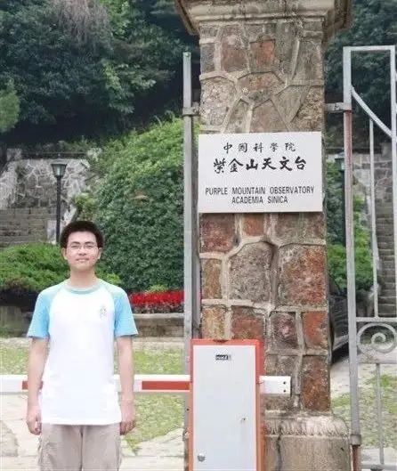
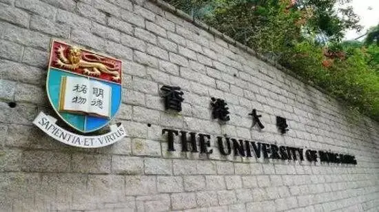
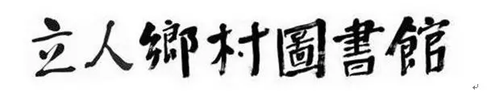
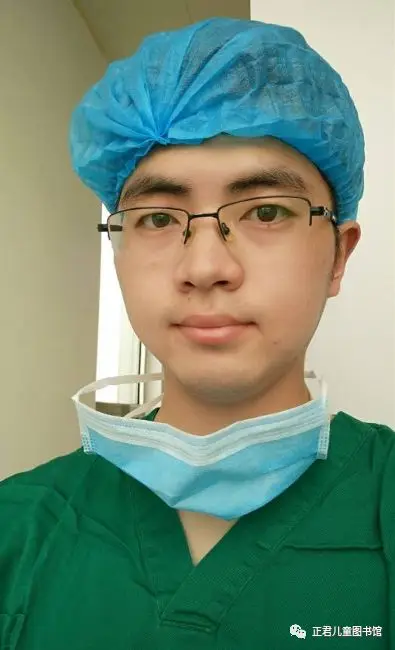
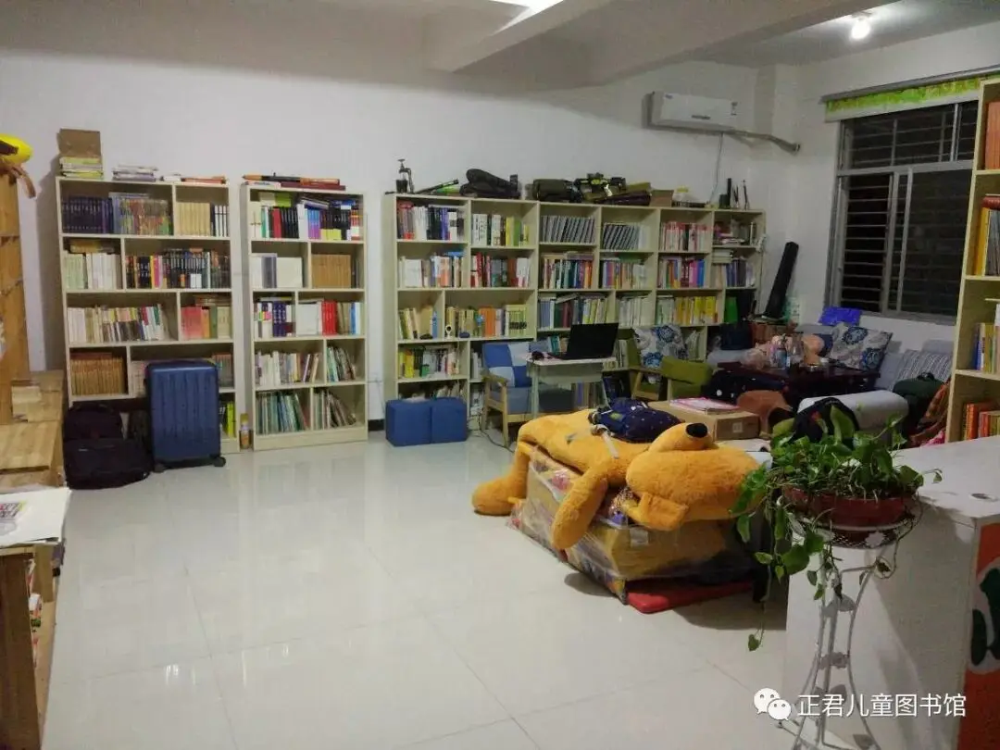
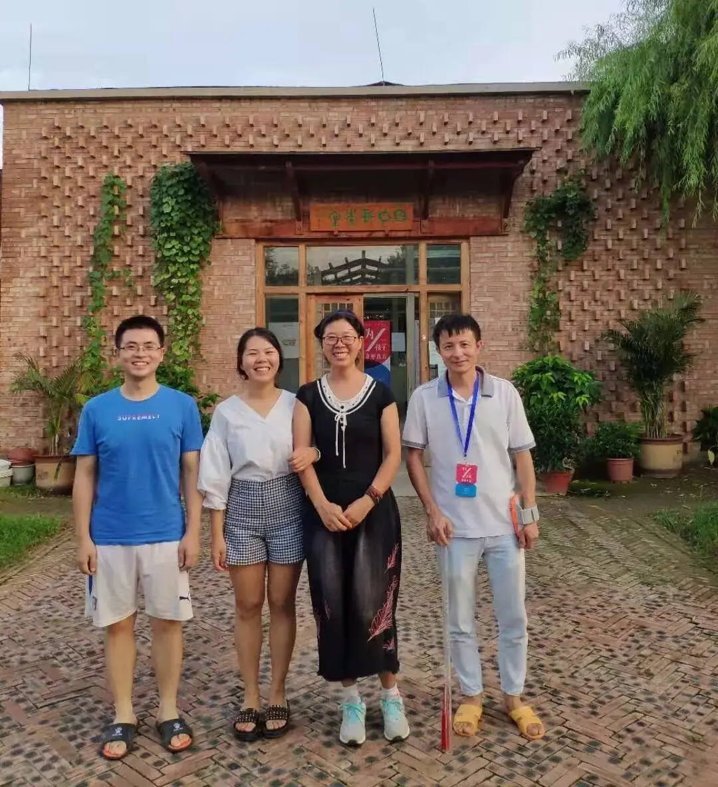

转眼我已经走出校园三年半。
参加工作后，我发现身边许多朋友、同事经常处于一种工作上的迷茫和倦怠之中。
有人毕业后根本就不知道自己喜欢什么、可以做什么，只能哪里赚钱往哪里钻。
有人身在体制中，整天这不满意、那不开心，但始终没有勇气走出来，时间久了，整个人也疲了。
体制之外的朋友则像以往上学一样，一心求上、加班加点，工作成为他的全部。
累趴了周末就大睡一场，再打打鸡血继续“奋发图强”。
大家普遍缺乏一种源自内心的工作热忱，总是处于一种“不得已”和“被逼着走”的疲惫之中。
我们的青年走到这个地方，是整个国家的悲剧，我们的教育并没有让我们更深地认识自己，也没有让我们更深地了解社会。
毕业后，这种“双重无知”让我们陷入到巨大的迷茫之中，对于家境较好的人，他们有更多的机会试错。
而对于寒门子弟，很多人根本就没有试错的资本，他们往往背负着整个家庭的重担，摇摇欲坠的家庭根本承受不住任何一次失败的风险。
我们的教育观念急需更新，我们需要以信仰为根基，立足自己的兴趣，以一种自主的、谦卑的、祝福别人的热忱去工作。
那样，工作才是一件美事，一件有意义的事。
这几天一位粉丝将他的故事分享给我，让我非常感动。
他叫宋事成，一个学医的大学生，他通过自己的探索、走访前辈，找寻到了属于自己的那份热忱。
他和一位老师在湖南省张家界慈利县办了一个正君公益图书馆，去年年底，宋事成成为正君公益图书馆的馆长。
他不仅为当地的孩子提供了阅读的环境，更是想方设法将自己对教育的思考，结合当地的环境，回馈给身边的孩子们。
宋事成走的路在我看来要比很多大学生来的更踏实、更谦卑，他的着眼点不是自己拼命地在社会中猎取能力和金钱，也不是削尖自己的脑袋要挤入社会的最高层，他着眼的是中国的基础教育，着眼的是孩子的读书。
这是一件非常祝福别人和社会的事，希望他真诚的经历和文字能够鼓舞和祝福更多处于职业迷茫中的朋友。
我为什么来到慈利
——写在来慈利一周年
文 宋事成
01
我为什么会来到慈利，在这个图书馆当志愿者，还办起一个托管班？
这要从我的大学说起。
高中毕业时，其实我最想学的是天文学，从小喜欢天文，还去南京拜访过紫金山天文台。
高三时给时任的严俊台长写过一封信，惊喜的是，还收到了严俊台长的回信，说：“如果你想学天文，就考到南京大学天文系。”
遗憾的是没考上南大，到选择专业时，家里就两个意见：一是医生，二是老师。
我当时刚刚高考完，脱离苦海，内心非常坚定，绝对不当老师：当老师有什么意思？我自己都不想做的那些题，还让我去再每天逼着我的学生去做？！不干，坚决不干！就报了临床医学。

来到大学，确实要比高中轻松太多，大一、大二按部就班，转眼就过了两年，到了大二结束的时候，人就有紧张感了，大学都上了两年，该考的试考过了，该拿的证书也拿了，可内心里却没有感到自己的成长。
考一门，过一门，丢一门，学了几十本书，考完了就过了，什么都不记得！不知道这样学下去，以后能干什么！心里充满了对未来的迷茫和恐惧。
当时，我已经清楚地知道一件事：大学肯定不是这么上的！那大学该怎样上？我并不清楚。
但，“什么是大学，什么是教育”，这一问题，就在我的心中埋下，我一直在内心不断地反思和回应这个问题。
2012年冬天，我读到了一本书——《北大批判》，一下解开了长期以来我内心的疑惑：原来大学是这样的啊！原来，人，是要读书的啊！我从小学到大学，学了那么多教材，做了那么多题，却没有读书！
《北大批判》的作者——薛涌先生，就成了我的启蒙老师。薛涌老师与我父亲同龄，本科在北大中文系，毕业工作十年后，毅然决定赴美留学，后在耶鲁完成了历史学系的硕士和博士学位，现在波士顿的萨福克大学任教，他有一个女儿，也十分优秀，今年刚刚高中毕业，拿到了纽约大学的offer。
薛涌老师一直践行着自己的教育理念，我一直想着能有机会去波士顿拜访薛涌老师。
在读完了《北大批判》以后，我就开始了疯狂的阅读，要把以前欠下的阅读债补回来。
刘瑜、陈丹青、野夫、柴静、刘道玉、钱理群、徐晓、熊培云、徐中约、费孝通、顾准、阿城、梁文道、高尔泰、资中筠、林达……
我通过这些人和他们的文字，开始重新认识这个世界，重新认识自己。在这个阅读的过程中，我感觉到我的世界被打开了，我的生活，不再是考试、拿证。我的心里，有了自己想做的事，是那种真正发自内心的，想要去做的事！
一件就是去港大，去看真正的大学。
在我的认知里，大陆已经没有真正的大学了，蔡元培时期的北大可算是真正的大学，而此时的“北大”，远非彼时的“北大”了。
在我认可的真正的大学中，以我目前的能力，能够去的，就是香港大学。

另一件，就是去成都拜访李英强老师。
李英强是一个民间组织——立人乡村图书馆的创始人。
李英强从北大硕士毕业后，辞去在北京的研究所的工作，创办“立人乡村图书馆”，全身心地投入其中，做真正的教育——以阅读为载体，用生命影响生命。
李英强老师对当下教育问题的批判和反思，尖锐且深刻，同时也提出了极有建设意义的方案，并身体力行。
他的文字和行动，为我自己对教育的思考，提供了重要的精神资源。

2013年夏天，在完成了这两件事后，我内心里的迷茫和恐惧减少了，寻着了一种久违的踏实，真正感受到了自己有所成长。
从此，我开始严肃地思考和不断地回应这样几个问题：何为教育，要做怎样的教育，以及该怎样去做。
我们国家目前的基础教育，做的实在是太糟糕了。
避开价值观和意识形态，我只从宏观的层面来说，一个班，五六十个人，把纪律管好就不容易了，还能剩多少教育的元素呢？
每个孩子都是独特和不同的，孩子最需要的，是被看见、被接纳和被尊重。
做基础教育，必须要研究儿童，因材施教。我敢断言，没有小班教学，就不可能有好的基础教育。
教育，是人与人之间的连接，所以教育的优劣，最终取决于那个做教育的人。
我们在一线的教师，管理五六十人的超级大班，处理好和学生以及学生家长之间的事务，已是不易，还要忙于应付学校和教育局的各种考核评比，连充足的休息都难以保证，何谈阅读和自我提升，自己都不读书的人，怎么去教孩子们读书？
研究教育，有一些人和经典，是绕不开的：陶行知、晏阳初、杨东平、朱永新、李镇西、尹建莉、李英强，蒙特梭利、苏霍姆林斯基、尼尔的《夏山学校》，小林宗作和巴学园……
有多少教育官员和一线教师，读过这些真正的教育家和他们的文字，这才是真正的能够决定我们基础教育水平的。
三聚氰胺毒奶粉的事情出来以后，父母们对为自己家中的婴儿选择奶粉就有了更多的谨慎。
好在奶粉市场是一个竞争的市场，三鹿奶粉垮掉了还有其他选择，不仅可以选择国内的各种品牌，还可以选择国外的品牌。
在教育上，其实也是类似的。
现在已经有很多父母意识到我们的学校教育也是一种掺了三聚氰胺的教育，有钱有势的人早早把孩子送出去读书（喝洋奶），而大多数人却别无选择。
但是，人们对于这种“有毒的教育”到底是“如何掺毒”“为何掺毒”“有何后果”等等缺乏深入认识。
也因此，对于如何改变教育现状，有时弄出一些南辕北辙的想法来：比如，有人呼吁加大政府在教育方面的投入，这类似于让三鹿奶粉再扩大产量；
又有人呼吁素质教育，这类似于让三鹿奶粉的产品升级换代，但你知道，最大的问题出在“奶源”这个地方，用问题牛奶生产出来的奶粉再高级也还是“毒奶粉”。
办出好的教育，不再是让政府加大投入，真正需要的很简单，便是开放教育市场，让不同的教育理念充分地竞争，让家长和孩子们能够自由的选择。
源于这些思考，也通过阅读和互联网，我认识了一些有着相同理念和价值的朋友。
张家界市慈利县的李正君老师，就是其中之一。
他坚持写教育日志，并经常在社交媒体上发布自己的文字，他的思考，我都极为认同。
于是，在2014年的端午节（这时，我正在上大三），我第一次来到张家界拜访李正君老师，在张家界待了几天，不仅仅是理念和价值上的认同，和正君在现实生活中的相处，也和谐愉快。
现在看来，正是这次拜访，为我现在在慈利的生活埋下了伏笔，当然，当时是没有想过的，因为在大学的这几年，除了张家界，我还去了不少城市，拜访了不少老师。
有了上述的这些经历，我对自己的大学和今后的职业方向，也都有了自己的想法。
在大四的时候，我就知道了，今后不会把医生作为自己的职业。我的热情，和思考，都在教育这个领域。
然而现实的问题是，学校已经无法转专业，加上家里人的不理解，所以只能先把这个医学学位读完，好跟家里有个交代后，再去做自己的事情。

2016年6月，我从医学院毕业，来自父母的压力非常大，我就先顺着家里的意思，进了当地一所医院，开始了我的医院工作和生活。
在医院，我也遇到了一些好的老师和朋友，非常感谢这些相遇，但这生活总是有被迫的意味，不管我怎样调整心态，仍会觉得不开心。
有一段时间，甚至是非常压抑，每天都觉得很痛苦，觉得自己的生活真的就是那种 “25岁就死了，到80岁才埋”的状态。
我不停地在和父母表达着我的诉求，用非暴力沟通的方法，去争取父母的认同。
而这并不容易，我知道，想让他们支持我，太困难了，但我也感觉到，在我长期不懈地软磨硬泡中，他们的态度，已经由最开始的“强烈反对”，变为“不那么反对”，这就够了。
于是，在医院工作一年后，我做出了决定，一定要去追求一次自己内心渴望的生活。我从医院辞职了。
此时，我得知李正君老师在慈利办了一个图书馆，他要去丹麦学习一段时间，图书馆无人照顾。
而我刚辞职，家里正暴风骤雨，和爸妈的关系非常紧张，显然不适合久待，就联系了正君老师，去他的图书馆做志愿者，避一下风头。
2017年的8月，我第二次来到张家界慈利县。
在慈利待了一个月后，家里的风暴基本平息，9月，我回到家里和父母摊牌，争取来了一段属于我自己的时间。
当时想去成都的先锋学校（一所我认可的体制外学校）工作，我2014年夏天在北京拜访过的一个老师，正好在先锋学校，可以为我做推荐。
但父母认为成都太远，不同意。
张家界近，只有几个小时车程，而且我已经在那生活了一个月，环境已经比较了解，父母辩我不赢，最终同意。
于是2017年12月，我收拾行李来到张家界，常驻慈利，成为了正君图书馆的馆长，开始了属于我自己的新的生活。
02
来到一个新的城市，认识新的人，开始新的生活。
出任图书馆的馆长，正君管吃管住，我的基本生活保障无忧。
我可以放手去做我想做的，发挥自己的能力，去创造一些价值。
虽然离开学校多年，但整个小学、初中阶段文、理各科的知识内容，重点、难点，我都还清晰的记得，并能用学生容易接受的方式，很好地讲述出来，至少在应试能力上，能给我的学生们提供有效的帮助。
但我深知，“教育”远不止应试，我非常认可，李英强老师的“以阅读为载体，用生命影响生命”的教育，图书馆是非常好的一个物理空间，甚至可以说是一座宝库。
正好图书馆就在县城一所小学旁边，我可以用一个托管班的形式，来践行自己的教育理念，同时让自己在这个县城有一份不错的收入，如此一来，这种实践，就可以成为一件有生命力的、长久的、可持续的事情。
一年的时间，证明了这个想法是实际而可行的，在图书馆的加持下，我的托管班，能够良好的运转下去，我自己还有时间和经济能力去成都、北京、昆明等地走访学校拜访老师，这更激励了我在教育这条路上的探索。

我所看到的县城学校教育，基本就是“作业+考试”这种非常落后的填鸭和灌输，每个班都是60人左右的超大规模班级，老师辛苦、学生压抑，家长抱怨。
为了管理好这么大一个班级，老师最有效的方法，就是“罚”。
罚抄是家常便饭，体罚也不少见，抄和罚很难让一个孩子更优秀，反而是很多孩子厌学的根源。在这样的学校，分数高的孩子，还有一些发展空间，分数低的孩子，就非常压抑了。
我所看到的教育希望：北京的日日新学校，深圳的山之雨学校，成都的先锋学校、好奇学校，大理的猫猫果学校、佛山的悦谷学校……
这些学校，都是体制外的民间力量办学，汇集了目前国内一批真正研究儿童，研究教育的学者和老师，在做真正符合儿童认知和生长规律的教育。
还有越来越多觉醒的老师和家长，加入进来。

03
我们最终都要走上社会，我们最终都要独立地去面对生活和生存，我们最终都要为人父母，我们最终都要赡养自己的父母，真正关乎我们人生幸福的问题，诸如怎样去强身健体，怎样去处理婚姻问题，怎样去教育孩子，我们的教育在这方面几乎空白。
对于中小学生来说，只要他不厌学，完成应试的内容并不是一件难事，但孩子的成长却远非如此，身体的成长、精神的发育，我们的教育欠孩子们的实在太多，只剩利益驱动下疯狂的应试。
我们不改变教育，教育就一定会改变我们和我们的孩子。
教育，是80后父母们和我们这一代人的普遍焦虑，这焦虑中也蕴含着巨大的希冀。
教育有问题，似乎已经公认，但又无力改变，是的，我也同样没有能力改变它。
“教育”，不是国家一声令下，或马云、俞敏洪几个重量级人物做了几件耀眼的事情就变好了。而是整体观念的改变，这是一个“渐变”的过程，需要时间，需要积淀。
其中，最重要的是放权，让懂教育的人有权利去办教育，让受教育者有权利去选择他认为更好的那一个。
我想成为一个好的记录者，多走多看，“读万卷书，行万里路”，去看世界各地的教育生态，去理解不同的价值观，去不同的教育机构工作，去记录各个地方的人们对教育的认识和思考，并把这些对教育的思考，回馈给我身边的孩子们。
这是我追求的价值和想过的生活。
这里没有挑逗你眼目情欲的小鲜肉
也没有挑动你肉体情欲的段子
更没有膨胀你今生骄傲的鸡血
我们只在乎那些最质朴真诚的作品
在那里我们才能恢复真正的想象力
我们也坚信这才是我们真正需要的

ID:Six_hundred_hits
长按二维码，一键关注
【六百击】
-END-
电影评论
尽情分享朋友圈

微信打赏通道
小提示：本文打赏将全部捐给正君公益图书馆以购买更多书籍，欢迎大家支持鼓励！